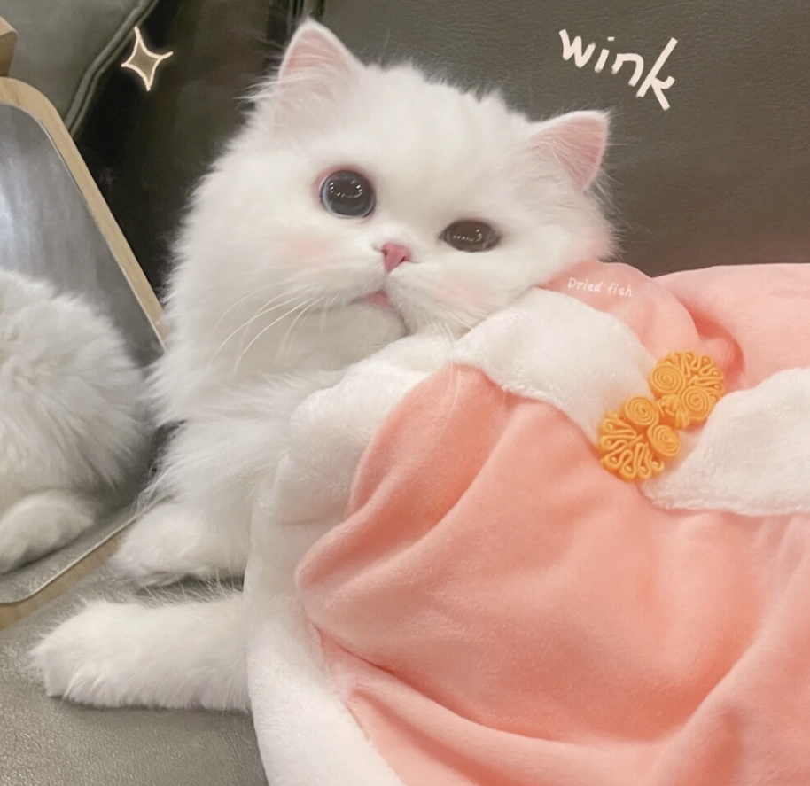

二十多岁的我们，常站在人生的岔路口张望，一边是被社交媒体放大的“成功焦虑”，一边是对未来的不确定感。但与其在焦虑中内耗，不如用行动为青春锚定方向。你可以像把爱好做成事业的手作人，在一针一线里积累成就感；也可以像扎根基层的选调生，在田间地头读懂责任的重量。那些看似“慢半拍”的坚持，会在某天连成属于自己的星光大道。请记住，青春从没有“标准答案”，你流下的每一滴汗、走过的每一步路，都在把“迷茫”的问号，活成“值得”的感叹号。
二十多岁的年纪，是人生中最具张力的成长阶段，既怀揣着对未来的美好憧憬，也难免遭遇现实与理想的落差。但迷茫从不是青春的底色，奋斗才是破解困惑的唯一密钥。不必纠结于暂时的得失，也无需盲从他人的节奏。
就像备考路上的我们，在无数个清晨背诵知识点，在深夜反复推敲难题，每一次坚持都是在为未来积蓄力量；亦或是钻研编程技术时，哪怕遇到代码报错、逻辑卡顿，也不轻易放弃，逐行调试、慢慢摸索，在攻克难关中收获成长与自信。
奋斗从来不是一句空洞的口号，而是藏在日常的每一个细节里。是练字时从控笔生疏到笔画流畅的蜕变，是梳理备考思路时从杂乱无章到条理清晰的进步，也是面对生活难题时冷静拆解、积极解决的从容。这些看似平凡的瞬间，串联起来就是青春最动人的轨迹。 青春的价值，在于敢于行动、勇于试错。不必害怕前路漫漫，只要心怀热爱、脚踏实地，以奋斗为笔，以实干为墨，就能在属于自己的人生画卷上，绘出不负韶华、不负时代的精彩篇章。
二十岁的我们，本就该在奋斗中绽放光芒，走出一条属于自己的成长之路。
日期
2026.3.15
